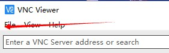
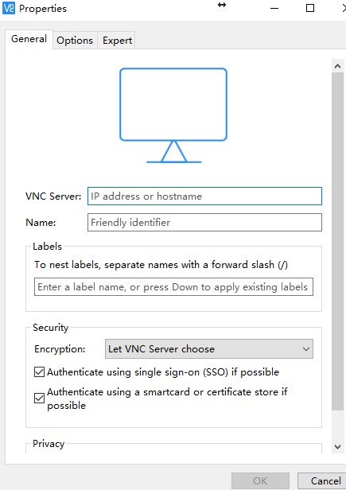

Linux安装VNC服务
Oracle 11g 提供了可选的图形化安装方式和静默安装方式，尽管静默安装的方式不需要图形界面的支持，且可以远程化自动化安装，但是在安装过程中极易出现配置问题，所以还是选择图形安装。
1、图形安装的问题在于aliyun的服务器默认是不安装x11桌面环境的，所以我们选择通过vnc来连接配置。
# yum -y install tigervnc-server tigervnc
# ls /lib/systemd/system/vncservper@.service
2、复制一份文件，并改名为vncserver@:1.service
# cp /lib/systemd/system/vncserver@.service /lib/systemd/system/vncserver@:1.service
3、将文件中的用你当前的用户Oracle替换，将%i替换为1, 还有注意要切换到该用户设置vncpasswd, 不然会报错，这个是用来远程连接的密码。
4、如果出现连接过程中，vnc只有一个checkbox, 且分辨率的设置不起作用， 则需要安装
yum groupinstall "GNOME Desktop" "Graphical Administration Tools"
5、centos6.8没有lib/systemd这个目录，所以跳过此步骤(需要安装X-Windows)
# yum check-update
# yum groupinstall "X Window System"
#yum install gnome-classic-session gnome-terminal nautilus-open-terminal control-center liberation-mono-fonts
### 设置默认启动图形界面
# unlink /etc/systemd/system/default.target
# ln -sf /lib/systemd/system/graphical.target /etc/systemd/system/default.target
6、修改/etc/sysconfig/vncservers
我这里用oracle测试连接，所以是1:oracle
VNCSERVERS="1:oracle"
VNCSERVERARGS[1]="-geometry 1024x768 -alwaysshared -depth 24"
7、在本地下载VNC Viewer 就可以通过图形化访问linux服务器了

new connection

按刚刚设置的1：oracle
VNC Server 填 IP:1，其他的不用填，点击ok后，双击打开，输入密码既可以使用了